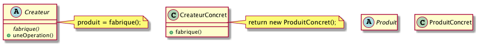
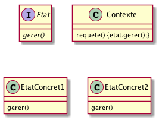
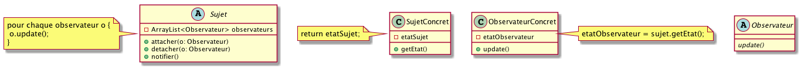
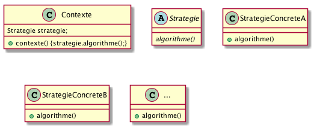

PreReq |
1. Je sais programmer en Java. 2. J’ai conscience qu’il faut réfléchir avant de se lancer dans le codage. 3. Je maîtrise patrons de conception. 4. Je maîtrise les diagrammes UML de classe, de séquence et d’états |
ObjTD |
Aborder le patron fabrique. |
Durée |
1 TD |
1. Rappel du cours
|
|
N’hésitez pas à (re)lire régulièrement le Support de Cours. |
2. Différences entre dépendance, association, composition, agrégation
Soit le diagramme de classe partiel suivant :
|
|
QUESTION
Complétez en ajoutant les relations (dépendance, association, composition, agrégation) entre les classes. |
3. Patrons
|
|
QUESTION
Pour chacun des diagrammes de classe partiels suivants (représentant des patrons que vous connaissez), complétez :

Figure 2. Patron …

Figure 3. Patron …

Figure 4. Patron …

Figure 5. Patron …
|
4. Machines à état
|
|
QUESTION
|
5. Diagrammes de séquences
Vous devez documenter, à partir des extraits de codes Java suivants,
l’application ApplicationBanque, développée en S2.
|
|
Vous refactorerez cette application en TP, l’objectif n’est donc pas pour l’instant de remédier aux problèmes de conception mais plutôt de les identifier. |
comptesDUnPropretaire (ApplicationAgenceBancaire.java)public static void comptesDUnPropretaire (AgenceBancaire ag, String nomProprietaire) {
Compte [] t;
t = ag.getComptesDe(nomProprietaire);
if (t.length == 0) {
System.out.println("pas de compte à ce nom ...");
} else {
System.out.println(" " + t.length + " comptes pour " + nomProprietaire);
for (int i=0; i<t.length; i++)
t[i].afficher();
}
}|
|
QUESTION
Réalisez un diagramme de séquence illustrant le fonctionnement de cette méthode. |
ApplicationAgenceBancaire.javapublic class ApplicationAgenceBancaire {
public static void main(String argv[]) {
String choix;
boolean continuer ;
Scanner lect;
AgenceBancaire monAg ;
String nom, numero;
Compte c;
double montant;
lect = new Scanner ( System.in );
lect.useLocale(Locale.US);
monAg = AccesAgenceBancaire.getAgenceBancaire();
continuer = true;
while (continuer) {
...
choix = lect.next();
choix = choix.toLowerCase();
switch (choix) {
case "q" :
System.out.println("ByeBye");
continuer = false;
break;
case "l" :
monAg.afficher();
break;
case "v" :
System.out.print("Num compte -> ");
numero = lect.next();
c = monAg.getCompte(numero);
if (c==null) {
System.out.println("Compte inexistant ...");
} else {
c.afficher();
}
break;
case "p" :
System.out.print("Propriétaire -> ");
nom = lect.next();
ApplicationAgenceBancaire.comptesDUnPropretaire (monAg, nom);
break;
case "d" :
...
break;
case "r" :
...
break;
default :
...
break;
}
}
}
public static void comptesDUnPropretaire (AgenceBancaire ag,
String nomProprietaire) {...}
public static void deposerSurUnCompte (AgenceBancaire ag,
String numeroCompte, double montant) {...}
public static void retirerSurUnCompte (AgenceBancaire ag,
String numeroCompte, double montant) {...}
}AccesAgenceBancairepublic class AccesAgenceBancaire {
private AccesAgenceBancaire () {}
public static AgenceBancaire getAgenceBancaire () {
AgenceBancaire ag = new AgenceBancaire("CAISSE ECUREUIL", "PIBRAC");
...
}
...
}|
|
QUESTION
|
Pour aller plus loin
|
|
QUESTION
|
About…
Document réalisé par Dut/Info-S3/M3105 - Semaine 3 (49) via Asciidoctor (version 1.5.2) de 'Dan Allen', lui même basé sur AsciiDoc.
Pour l’instant ce document est libre d’utilisation et géré par la 'Licence Creative Commons'.
 licence Creative Commons Paternité - Partage à l'Identique 3.0 non transposé.
licence Creative Commons Paternité - Partage à l'Identique 3.0 non transposé.